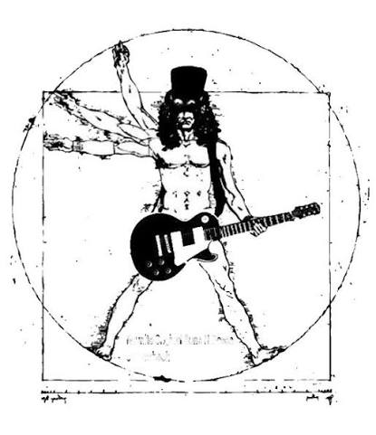

PRIMEIRO POST: O QUE É ROCK?
Olá, leitores deste INCRÍVEL blog! Hoje vamos falar sobre o melhor gênero musical do planeta: o Rock N' Roll!!!!!!
O Rock surgiu nos anos 50, misturando o Blues, Country e o Jazz. No cenário pós-Segunda Guerra Mundial, os jovens precisavam de uma identidade própria. O estilo agressivo quebrou padrões conservadores e deu voz aos chamados "rebeldes sem causa" através da música e da moda.
A evolução do rock é uma jornada rica que se desdobra em dezenas de vertentes sonoras e ideológicas. Tudo iniciou nos anos 50s, com a explosão comercial das guitarras eletricas e grandes nomes como Elvis Presley. Nos Anos 60s com a Invasão Britanica na cultura ocidental, comos Beatles sendo o maior marco cultural da historia contemporanea na chamada Beatlemania, dando espaço para bandas como Rolling Stones. Nos anos 70s explodiu a onde Punk na inglaterra, com a juventude pobre se opondo a crise economica do periodo e se opondo ao Glam rock, impulcionando ideias radicais como o Anarquismo.
Também na virada dos anos 60 para os 70 nasceu o Heavy Metal com a santíssima trindade: BLACK SABBATH ("Paranoid"), LED ZEPPELIN ("Whole Lotta Love") e DEEP PURPLE ("Smoke on the Water"), marcando a época com riffs pesados e solos detalhados. O estilo se expandiu até explodir nos anos 80 com a Nova Onda do Heavy Metal Britânico. Bandas como IRON MAIDEN ("The Number of the Beast"), JUDAS PRIEST ("Breaking the Law") e DEF LEPPARD misturaram o peso do metal tradicional com a velocidade do punk. Usando guitarras gêmeas e jaquetas de couro, eles moldaram a estética do Metal Moderno e abriram portas para o Thrash Metal.
Ainda nos anos 80, a busca por um som mais rápido e agressivo deu origem ao Thrash Metal, uma vertente que uniu os riffs pesados do metal tradicional com a velocidade brutal e a energia crua do punk rock. O movimento foi coroado pelo famoso "Big Four" (As Quatro Grandes) do Thrash americano, liderado pelo METALLICA com a clássica "Master of Puppets", o MEGADETH com "Tornado of Souls", o SLAYER com a avassaladora "Raining Blood" e o ANTHRAX com "indians". Esse subgênero se destacou por suas letras com temas sociais e políticos, guitarras extremamente rápidas e palhetadas pesadas, marcando para sempre a história da música extrema
O Black Metal surgiu como um gênero extremamente agressivo que tem suas raízes diretamente ligadas à velocidade e à crueza do Thrash Metal. A chamada Primeira Onda começou nos anos 80, liderada por bandas como VENOM (com a música "Black Metal"), BATHORY e CELTIC FROST, que trouxeram uma estética sombria e temas satânicos para a música pesada. Já nos anos 90, o movimento se transformou radicalmente com a Segunda Onda do Black Metal na Noruega. Grupos como MAYHEM ("Freezing Moon"), BURZUM e DARKTHRONE definiram o som definitivo do estilo, marcado por guitarras com distorções ríspidas, vocais rasgados e uma produção propositalmente de baixa qualidade, criando uma atmosfera fria e obscura que chocou o mundo.
Nos anos 90, o rock passou por uma fragmentação radical. A cena alternativa de Seattle explodiu com o Grunge de bandas como NIRVANA ("Smells Like Teen Spirit") e PEARL JAM ("Alive"), trazendo guitarras sujas e letras melancólicas. Do outro lado, longe das rádios pop, o Groove Metal do PANTERA ("Walk") e dos brasileiros do SEPULTURA ("Roots Bloody Roots") trouxe um peso avassalador focado em ritmos sincopados. No final da década, o Nu Metal de grupos como KORN e SLIPKNOT ("Wait and Bleed") misturaram esse peso com elementos de hip-hop e música eletrônica, ditando o comportamento da nova geração.
Ainda nesse limbo dos anos 90 e inicio dos anos 2000, longe do peso tradicional do metal, o Rock Alternativo ganhou uma profundidade artística sem precedentes. O grande destaque dessa cena foi o RADIOHEAD, que começou com o rock visceral de "Creep" e depois revolucionou a música mundial ao misturar guitarras com texturas eletrônicas e experimentais no álbum Kid A. Outras bandas como PIXIES ("Where Is My Mind?") e THE SMASHING PUMPKINS ("1979") também mostraram que o rock não precisava seguir fórmulas prontas para tocar no coração de uma geração que buscava originalidade e letras mais profundas.
Mas qual foi o paradeiro do metal após a explosão do Nu Metal no início dos anos 2000? A resposta veio com a NWOAHM (Nova Onda do Heavy Metal Americano). Esse movimento resgatou a agressividade do Thrash clássico e misturou com a técnica refinada do Metalcore. Bandas como LAMB OF GOD ("Redneck"), AVANGED SEVENFOLD ("Bat Country") e MASTODON ("Blood and Tunder") assumiram os palcos principais dos grandes festivais. Elas provaram que o metal continuava extremamente vivo, técnico e pesado, renovando o público e ditando as regras da música extrema no novo milênio.

SEGUNDO POST: BANDAS QUE A BAUDISCH CURTE
Olá, leitores deste INCRÍVEL blog! Nesse segundo post, iremos tratar sobre bandas que a Baudisch Gosta! O genero dela é voltado para um rock alternativo e experimental e iremos comentar sobre algumas de suas bandas favoritas
David Bowie foi o rei absoluto da reinvenção no mundo da música. Ele não era apenas um cantor, mas um artista completo que mudava de identidade, de estilo e de visual a cada novo álbum. Nos anos 1970, ele chocou e encantou o mundo ao criar o personagem Ziggy Stardust, um alienígena rockstar que popularizou o Glam Rock com muita maquiagem, roupas brilhantes e guitarras marcantes. A grande lição que Bowie deixou para a história da música foi a liberdade: ele provou que um artista não precisa ficar preso a um único gênero e pode misturar rock, pop, soul e música eletrônica em uma mesma carreira.
The Clash foi a banda que mostrou que o Punk Rock podia ir muito além de três acordes barulhentos e muita revolta. Formado na Inglaterra no fim dos anos 1970, o grupo liderado por Joe Strummer usava suas letras para protestar contra a injustiça social, o racismo e a situação política da época. O grande diferencial deles foi misturar a energia pura do punk com ritmos que ninguém esperava ver juntos, como o reggae, o ska, o funk e o dub. O álbum London Calling, lançado por eles, é considerado até hoje um dos discos mais importantes da história por provar que o rock de protesto também pode ser incrivelmente dançante e musicalmente rico.
The Cranberries trouxe para os anos 1990 um som que equilibrava perfeitamente a doçura do Pop Rock com a força do Rock Alternativo. Vinda da Irlanda, a banda conquistou o mundo inteiro graças à voz única e potente da vocalista Dolores O'Riordan, que conseguia ir de um sussurro suave a um grito carregado de emoção em poucos segundos. Eles sabiam criar melodias que grudavam na cabeça, mas não tinham medo de tocar em assuntos sérios e pesados. A música mais famosa deles, Zombie, por exemplo, é um protesto vigoroso contra os conflitos violentos que aconteciam na Irlanda do Norte, mostrando que o rock comercial também carrega mensagens profundas.
Sonic Youth foi o grupo que ensinou o mundo a ver beleza no barulho e na distorção. Nascida em Nova York nos anos 1980, essa banda de Rock Alternativo jogou fora as regras tradicionais de como tocar uma guitarra. Eles usavam afinações completamente malucas e até objetos como chaves de fenda enfiadas nas cordas para criar sons que pareciam texturas de arte moderna. O Sonic Youth influenciou quase todas as bandas de rock dos anos 1990 — incluindo o Nirvana — e se tornou o maior símbolo do "Noise Rock" (rock ruído), provendo que a experimentação e o caos também fazem parte da música.
The Cardigans é uma banda sueca que engana muita gente à primeira vista com seu som aparentemente leve e ensolarado. Eles estouraram no mundo inteiro nos anos 1990 com o mega hit Lovefool, que tinha um ritmo pop perfeito e os vocais super doces da cantora Nina Persson. Porém, por trás dessa camada deçosa de "Pop dos anos 60", as letras da banda costumam ser bem melancólicas, ácidas e cheias de ironia sobre relacionamentos. Eles são o exemplo perfeito de como o Indie Pop pode ser extremamente sofisticado, misturando arranjos elegantes de jazz e rock com melodias que parecem feitas para um dia de sol na praia.
Le Tigre fechou a década de 1990 e abriu os anos 2000 trazendo uma mistura explosiva de punk eletrônico e feminismo. Liderada por Kathleen Hanna — que já era uma figura histórica do movimento punk feminista Riot Grrrl —, a banda trocou parte das guitarras pesadas por batidas de sintetizadores, samples e drum machines baratas. O som deles, conhecido como Dance-Punk, tinha um objetivo muito claro: fazer as pessoas dançarem na pista decolando mensagens diretas contra o preconceito, a homofobia e o machismo. O Le Tigre ensinou que a política e o ativismo também podem ser celebrados com muita cor, batidas eletrônicas e diversão.
9.0
TERCEIRO POST: BANDAS QUE O MILBRATZ CURTE
Black Sabbath foi a banda que deu origem a tudo o que conhecemos como Heavy Metal no início dos anos 1970, mudando para sempre o destino da música. Nascido na cinzenta e industrial cidade de Birmingham, o grupo trocou os temas românticos e a vibe hippie da época por uma sonoridade densa, obscura e assustadora. Com as guitarras pesadas e arrastadas de Tony Iommi — que criou um estilo único de tocar após sofrer um acidente nas pontas dos dedos —, o baixo primitivo de Geezer Butler, a bateria pesada de Bill Ward e os vocais sombrios de Ozzy Osbourne, o grupo britânico passou a falar de ocultismo, terror, guerra e ficção científica. Eles criaram uma atmosfera misteriosa e um peso sonoro inédito que definiram a estética, a afinação e a atitude de praticamente todas as vertentes do metal que vieram depois.
Guns N' Roses resgatou o perigo, a crueza e a atitude agressiva do legítimo Rock N' Roll no final dos anos 1980, surgindo como um verdadeiro furacão quando a cena musical estava dominada pelo visual exagerado e comercial do Hair Metal. Vindo das ruas perigosas de Los Angeles, o grupo era liderado pela voz rasgada e a presença imprevisível de Axl Rose, perfeitamente combinadas com os solos marcantes e os riffs icônicos do guitarrista Slash. Eles misturavam a urgência rebelde do punk com as melodias marcantes do hard rock clássico, cantando sem filtros sobre a vida caótica na cidade grande, vícios, excessos e desilusões amorosas. O impacto deles foi imediato, transformando o álbum de estreia da banda em um dos discos mais vendidos de todos os tempos e provando que o rock de arena ainda podia ser perigoso, visceral e incrivelmente popular.
Megadeth se consolidou mundialmente como um dos quatro pilares sagrados do Thrash Metal, um estilo que se caracteriza pela velocidade extrema e guitarras altamente agressivas. A banda foi criada pelo guitarrista e vocalista Dave Mustaine nos anos 1980, logo após sua demissão polêmica do Metallica, o que acendeu nele uma sede implacável de criar um som mais rápido e complexo. O grande diferencial do Megadeth sempre foi a precisão cirúrgica e o nível técnico de suas composições, marcadas por duelos de guitarras velozes, mudanças de ritmo inesperadas e solos refinados que exigiam muito virtuosismo. Além da musicalidade impecável, as letras escritas por Mustaine sempre foram afiadas e politizadas, abordando temas complexos como os perigos de uma guerra nuclear, teorias de conspiração global, hipocrisia religiosa e a corrupção de líderes políticos.
Slayer levou o metal pesado aos seus limites absolutos de velocidade, agressividade sonora e choque visual, tornando-se a banda mais extrema e sombria do Thrash Metal. Enquanto outros grupos buscavam melodias ou flertavam com o rádio, o quarteto californiano apostou em um ataque sonoro impiedoso, impulsionado por palhetadas ultra-rápidas e pelas batidas de bateria avassaladoras de Dave Lombardo. O Slayer se transformou em uma lenda do estilo ao abraçar controvérsias sem nenhum medo, criando letras perturbadoras que exploravam temas como serial killers, os horrores da guerra mundial, satanismo e críticas severas à religião organizada. O som denso, caótico e a atmosfera quase sufocante dos seus discos abriram as portas e serviram como base direta para o nascimento de gêneros ainda mais pesados e obscuros no futuro, como o Death Metal e o Black Metal.
Korn virou o mundo do rock alternativo de cabeça para baixo na metade dos anos 1990 ao quebrar todas as regras vigentes e inventar um movimento totalmente novo: o Nu Metal. O grupo nascido na Califórnia decidiu abandonar os solos tradicionais de guitarra rápidos e os vocais agudos que dominaram a década anterior. Em vez disso, apostaram em guitarras de 7 cordas com afinações extremamente graves, um baixo com cordas frouxas que parecia percussão e ritmos fortemente influenciados pelo balanço do hip-hop e do funk americano. No entanto, o maior impacto da banda veio do lado emocional: o vocalista Jonathan Davis usava o microfone como uma sessão de terapia, desabafando de forma crua, visceral e dolorosa sobre traumas reais de infância, bullying, ansiedade e saúde mental. Essa honestidade brutal criou uma conexão imediata e gigantesca com milhões de jovens ao redor do mundo.
System of a Down conquistou o topo das paradas no início dos anos 2000 entregando uma das propostas musicais mais originais, teatrais e insanas da história da música moderna. O quarteto, formado por músicos de origem armênia radicados nos Estados Unidos, desafiou qualquer rótulo ao misturar o peso esmagador do metal alternativo com arranjos vocais bizarros e ritmos folclóricos tradicionais da cultura armênia. As músicas da banda funcionam como uma montanha-russa, mudando de uma melodia calma e sussurrada para uma gritaria frenética e ultra-veloz em questão de frações de segundos. Sob o comando da voz versátil de Serj Tankian, o grupo utiliza essa energia caótica e bem-humorada para fazer protestos severos contra o genocídio, as guerras modernas, o sistema prisional e o controle da mídia, provando que é possível fazer música altamente política com muita criatividade e diversão.